Five-flags batch: before and after, and your three questions
Every picture is the real app on this branch. A before is today's app with the old rule put back just for the
picture; a proposal is drawn onto the real app the same way. Nothing here is built yet except Part 1.
Your answers, 27 Sep 26: Part 1 items 1–3 approved as built · item 4: full screen asked, now below · Q1 refused · Q2 and Q2b yes · Q3 keep.
Part 1 · built, waiting for your "merge live"
What this batch changed
1 · Your own puck stops glowing when it carries a flag
Before
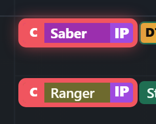
Your purple Saber puck (top) glows red; Ranger's, with the same flag, doesn't.After
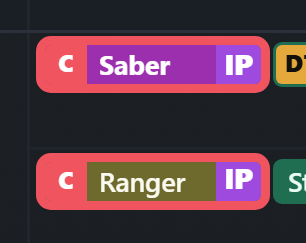
The same plain red ring as Ranger's. Still purple, so you know it's you.Before
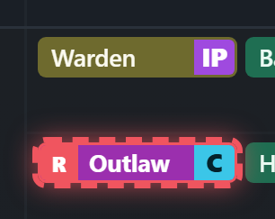
The dashed ring (a late show allowed by the rules) was filled in by the haze.After
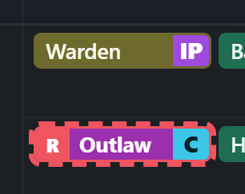
Clean dashes, as on anyone else's puck.
2 · Leave War → ⚙ Settings gains "Reset order"
Before
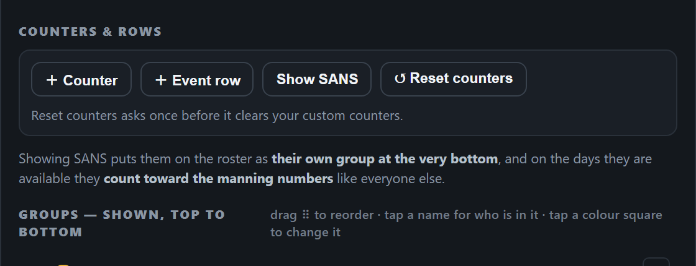
No way back to the default order once you'd rearranged the roster.After · nothing to do
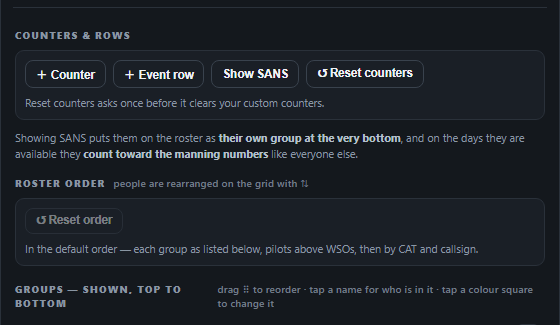
Greyed while the roster is already in the default order.After · rearranged
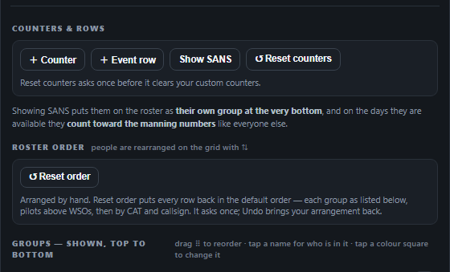
Lights up once you've dragged someone out of order.After · first tap
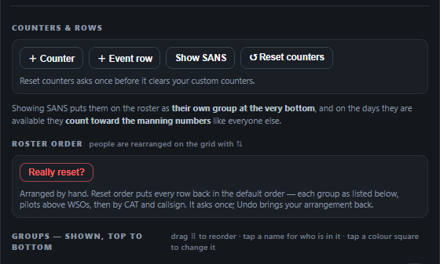
One tap asks "Really reset?"; the second puts everyone back. Undo brings your arrangement back.
3 · Swapping two men inside one crowd no longer says "already on"
Before
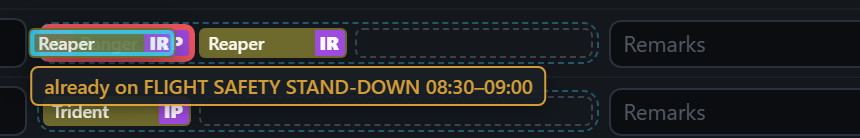
Dragging Reaper onto Ranger in FLIGHT SAFETY STAND-DOWN warned "already on" that very row.After
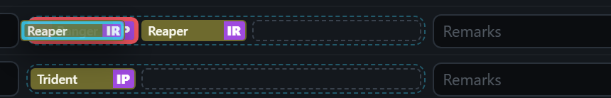
No warning: it's a swap within the row. A real clash elsewhere is still named.
4 · The front day sits clear of the ‹ arrow (desktop)
Before
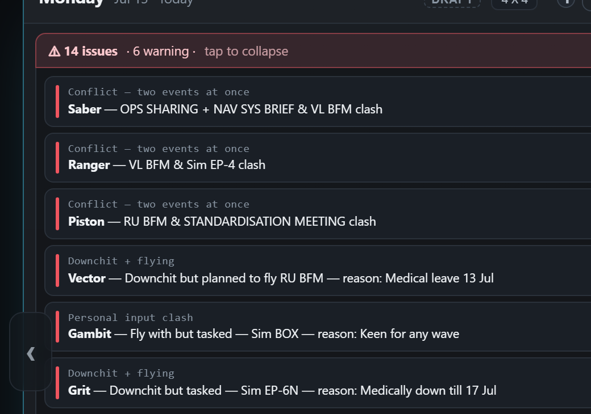
Monday's "⚠ issues" list ran under the ‹ arrow (bottom left): the start of the Gambit and Grit rows is hidden.After
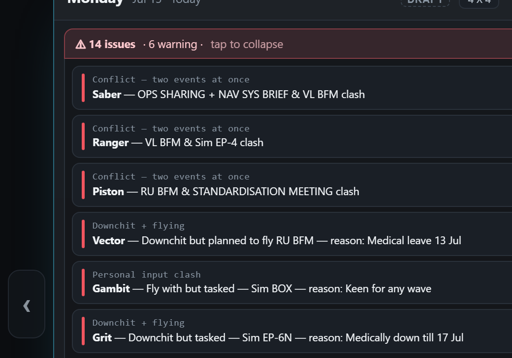
The week keeps a gap for the arrow, so nothing hides under it. Same after every › press, page switch and warning tap.
Item 4 · full screen (your ask)
The whole desktop window at 1440 × 900. Look at the ‹ arrow on the left edge, halfway down. Pinch to zoom on a phone.
Before · View-only, Monday's warning list open
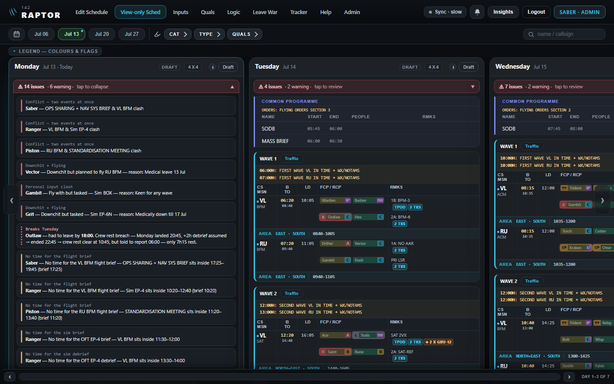
The arrow covers the start of the Gambit and Grit rows.After · the same
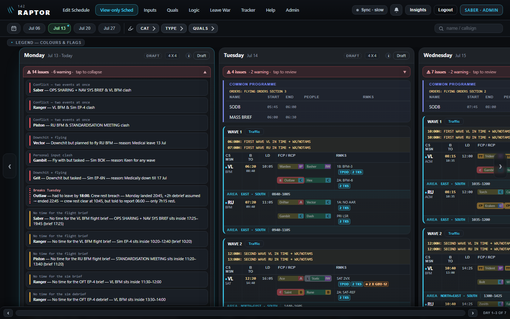
Monday starts right of the arrow; every row reads in full.Before · View-only after two › presses
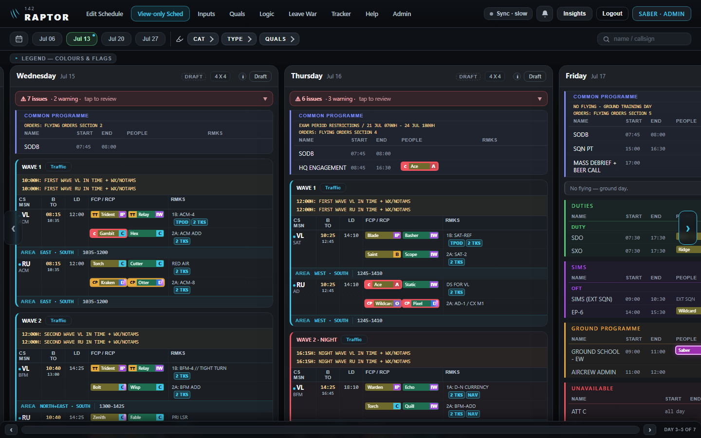
Wednesday at the front, the arrow over its first flying line ("VL ACM").After · the same
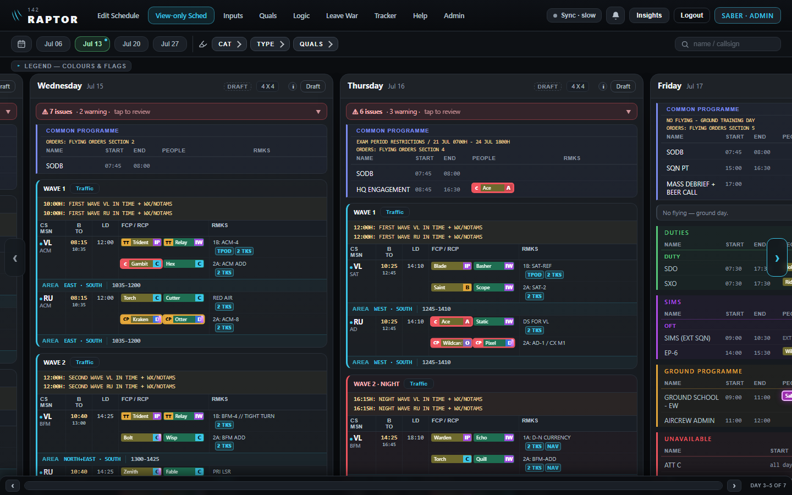
Wednesday clear of the arrow, with Tuesday's thin strip beside it (your Q3: keep).Before · Edit Schedule at rest
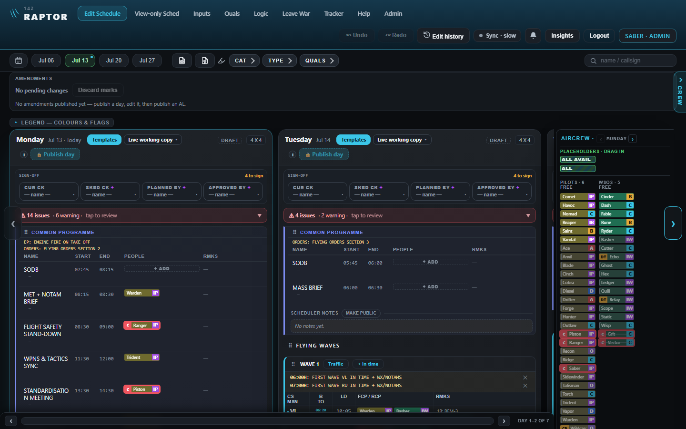
The arrow covers the start of Monday's "⚠ 14 issues" bar.After · the same
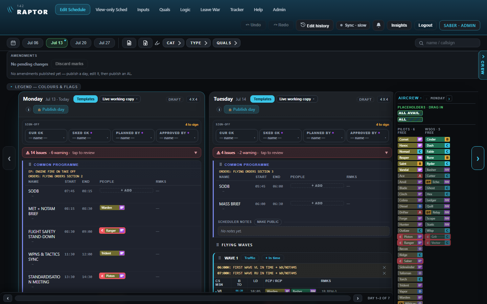
Monday clear of the arrow. On the right, the › still floats over the crew list's edge, as before.
5 · The background-command guard: a fix to the chats' own tooling, not the app. Nothing to see.
Question 2 · you said yes · not built yet
Your own puck shows the warning's ring
With any warning on it, your own puck shows that warning's own ring, exactly like anyone else's. The purple fill still says "you". With no warning, it keeps the purple ring and glow.
Purple, where Pixel shows thin red.After · thin red
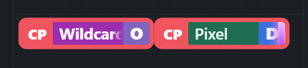
Both thin red.Today · grey note
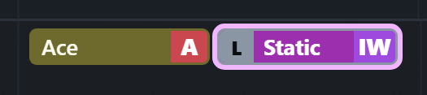
Purple hides the grey long-day note.After · grey note
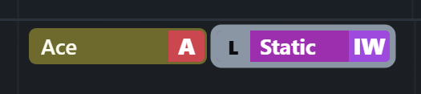
The grey ring shows.Today · dotted
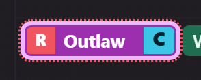
Dots over a purple ring.After · dotted
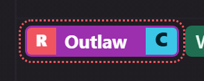
Just the dots ("causes tomorrow's crew-rest break").
Q2b, one small follow-up. In OIL Earn mode, the green OIL ring on your own puck is hidden under the purple ring the same way, so you can't see whether you earn. Treat it the same: green ring, purple fill? Recommended: yes.
Question 1 · your call
A man put on a row he's already on: warn, or refuse?
Ranger is already on FLIGHT SAFETY STAND-DOWN. You drag him onto the same row again from the crew list, or tap its "+ add" and pick him.
Today (as built): warned, then added twice
While dragging
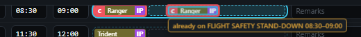
The warning shows under the puck.After the drop
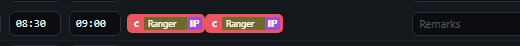
A second Ranger lands anyway, both ringed red. Your 13 Aug rule: "everything plants, warning after".
Proposed: refused
While draggingThe same warning under the puck.After the drop
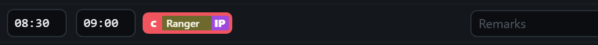
Nothing is added: the row keeps its one Ranger.And it says why
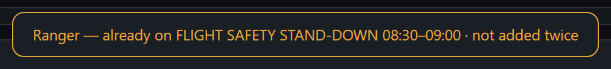
The same message a refused placeholder drop gives today. Tapping him in the crew list with "+ add" armed does the same.
Recommended: refuse. There's no reason to have the same man twice on one row. A man on two different rows at once is still only warned, as today.
Question 3 · your call · desktop only
The strip beside the ‹ arrow
With the new gap, the last ~42 pixels of the day before (here Monday, with Tuesday at the front) show at the left edge, around the arrow. It used to be 8 pixels.
Keep · recommended
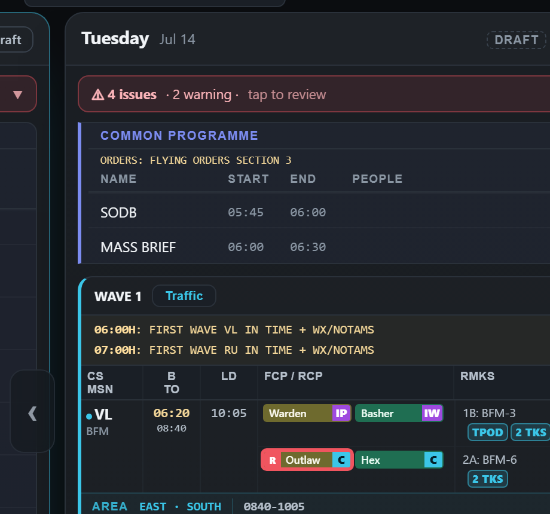
A glimpse of Monday: tells you there's a day to the left.Empty
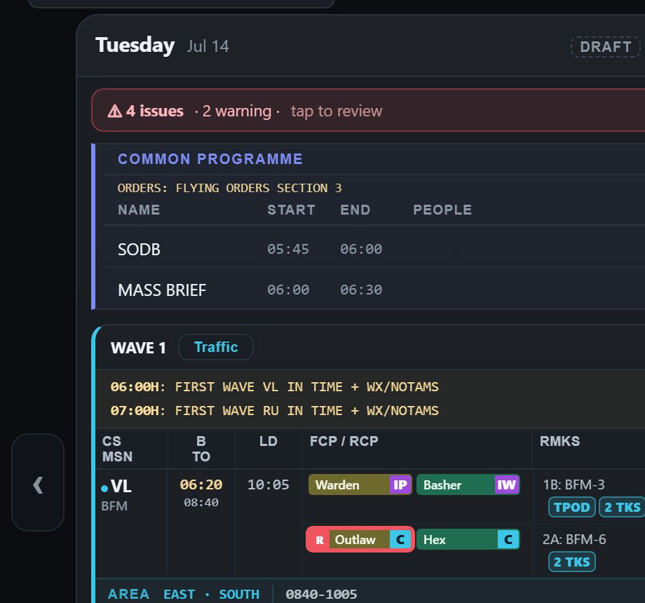
The strip is blank: only the arrow sits there.Fade
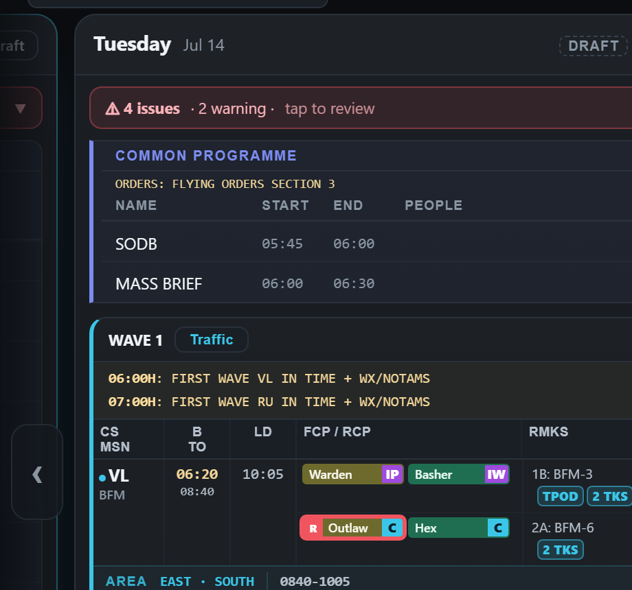
In between: Monday fades out towards the edge.
Reply in the chat: Q1 (refuse / warn as today), Q2b (yes / no), Q3 (keep / empty / fade). A word each is enough.